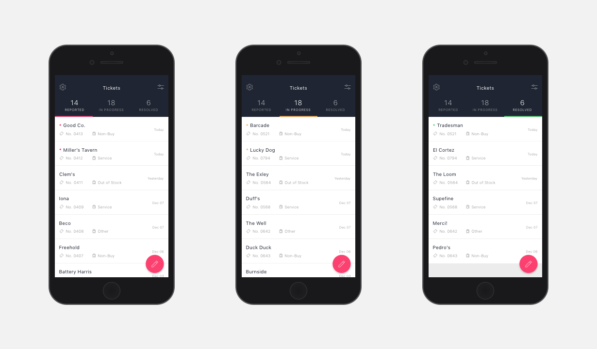

AB Insight
- User Research / User Interviews
- Information Architecture / User Flows
- Wireframing / Prototyping
- Usability Testing / Visual Design
AB InBev wanted an app for their stakeholders and sales teams to ensure their vendors were representing AB InBev and their products according to brand guidelines. They envisioned the app to be the go-to for quick and easy quality assurance. The main focus was to motivate employees to use the app by creating a seamless experience of reporting and tracking issues, while meeting the needs of the admin and sales teams who are in charge of fixing the issues.
